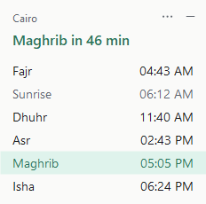
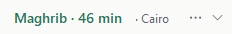
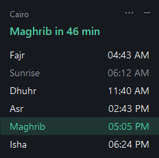
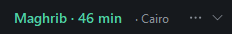
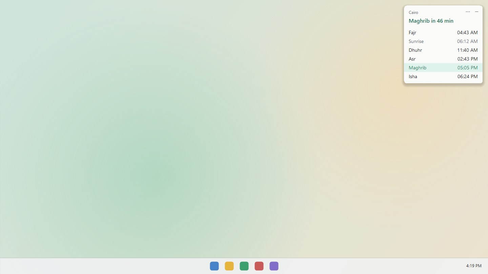

Azan wa Salawat أذان وصلوات
Today's prayer times, a countdown to the next prayer, and a notification at each prayer, in a small window on your desktop. Free, no installation, works offline.
Download for WindowsThis app is for Windows PCs. Open this page on your Windows PC to download it.




Full size, or minimized to one line. Click ⋯ for settings.
On your desktop
It sits at the top right of your screen, above other windows, and stays out of the way.

What it does
Today's six times
Fajr, Sunrise, Dhuhr, Asr, Maghrib and Isha, with the next prayer highlighted.
Countdown
Shows how long until the next prayer, always in view.
Notifications
A notification at each prayer time, and a reminder shortly before it.
Your location
Picks your city from your PC's time zone. Choose another city or add your own.
Your mosque's method
11 calculation methods, and Standard or Hanafi Asr.
Your look
Light or dark, accent colours, see-through, snaps to screen edges, and shrinks to a one-line bar.
How to start
- Click Download for Windows and unzip the file.
- Copy AzanWidget.exe to a folder you keep, for example Documents.
- Double-click it. If Windows shows "Windows protected your PC", click More info, then Run anyway.
- The widget appears at the top right of your screen. Click ⋯ on it, or right-click it, for settings.
Why Windows shows a warning
Windows warns about new apps that aren't signed with a publisher's certificate. It doesn't mean a problem was found in the app. You see it once.
If Windows says it "blocked this file"
The message "An Application Control policy has blocked this file" means Smart App Control is on. It has no "Run anyway" option, so this download can't run on that PC. The Microsoft Store version will.
What's new
See the latest release for what changed.
Microsoft Store version
A Store version is being prepared. Store apps are signed by Microsoft, so it will open without the warning and work with Smart App Control.
Windows only, for now
The widget is a small Windows app. A Mac version needs its own build and is planned.